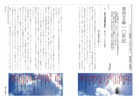
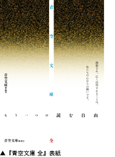

青空文庫を図書館の書架に！
『青空文庫 全』寄贈計画のお知らせ
2007年10月26日 2010年4月10日 更新
青空文庫

▲上の画像のクリックで、『青空文庫 全』が開きます。
プリント用の高解像度版は、ここをクリックしてダウンロードしてください。（9.6Mバイトあります。）
【寄贈計画ニュース：2010年4月10日版】
・2010年4月10日（土）、残部がつきたので、『青空文庫 全』の配布を終了しました。
・2008年1月13日（日）、公開作品の書誌データをまとめて取得する際に利用できる、
「作家別作品一覧」に関する内容を、「青空文庫早わかり」に書き足しました。『青空文庫 全』DVD-ROM収録作品の書誌データを得る際にも、「一覧」は使えます。
・2008年1月、国際交流基金情報センターライブラリーのご支援を得て、海外の図書館へ寄贈の輪が広がり始めました。
・2007年12月13日（木）、全国視覚障害者情報提供施設協会加盟の、点字図書館を中心とした施設92箇所に、『青空文庫 全』を送りました。
・寄贈要請をいただいた方への第二次発送作業を、同日、行いました。青空文庫側から「送ります。」と返答があったにもかかわらず、12月20日（木）を過ぎても届かない場合、もしくは送付物に不足があった場合は、再度info@aozora.gr.jpにご連絡ください。
・2007年12月1日（土）、『青空文庫 全』の表紙、本文を公開しました。
・公共図書館、大学、短大、高専付属図書館、高等学校と、全ての盲学校、高等部以上をもつ聾学校の図書館向け発送作業は完了しています。届いていない場合は、info@aozora.gr.jpにご連絡ください。
・作成部数との兼ね合いで、養護学校の全てに送ることは諦めざるを得ませんでした。ただしinfo@aozora.gr.jp宛にお求めいただければ、残部のある限り送ります。中等部以下のみの聾学校からのご要望にも、こたえます。
配布を終了しました。
2010年4月10日、残部がつきたので、『青空文庫 全』の配布を終了しました。
この計画の遂行にあたっては、社団法人日本図書館協会、ライブラリー・アド・サービス、国際交流基金情報センターライブラリー他、たくさんの方々にご支援いただきました。
あらためて、心からお礼を申し上げます。
インターネットの電子図書館、青空文庫は2007（平成19）年7月7日、開設10周年を迎えました。
これを記念して、青空文庫の一式をおさめたDVD-ROM付き冊子『青空文庫 全』を、約8000の図書館に寄贈します。
この計画は、社団法人日本図書館協会との協賛事業として進めます。
DVD-ROMには、青空文庫収録作品のうち、著作権の切れた作家と翻訳家407名の、約6500点をおさめました。
冊子では、DVD-ROMの使い方に加えて、寄贈計画の狙いや、青空文庫の成り立ち、著作権保護期間の延長に反対する青空文庫の考え方などを説明しています。
10月27日からの読書週間に合わせ、公共図書館、大学、短大、高専付属図書館計約3000には10月末に、高校図書館5000には11月20日ごろ届けます。（『青空文庫 全』は、プラスチックのケースにおさまったDVD-ROMではなく、32ページの書籍にDVD-ROMを添付した形をとっています。届いているか図書館に確認する際は、書籍であることをはっきり伝えてください。）
会計報告に示すとおり、青空文庫はトップページの広告収入で経費をまかない、税支払い後の剰余金を蓄積してきました。『青空文庫 全』の寄贈に要する費用約300万円は、ここから支出します。
インターネットという限られた領域では、青空文庫の利用は広がってきました。
日に約1万4000人が訪れるようになり、健常者、晴眼者の他、紙の本を持てない人や、視覚障害者にも利用されています。
加えて、パソコンを越えた世界にも、青空文庫の活用の輪が広がりはじめました。
ニンテンドーDSで読む文学全集や、1冊100円、全30巻の文学全集、お風呂で読む本、大きな活字の文庫など、個性的な「本」の数々が、自由に利用できる青空文庫の著作権切れファイルをもとに、作られるようになったのです。
寄贈計画によって、私たちはこの動きを、加速したいと考えています。
文化的な遺産を収集、保存し、広く公開する仕組み作りへのインターネットの貢献も、明らかになってきました。
一部から求めのある、著作権保護期間の延長をおこなえば、こうしたデジタル・アーカイブを用いて自由に公開できる作品はより古いものに限られ、インターネット社会の可能性の一つが、しぼんでしまいます。
『青空文庫 全』では、そのことも訴えました。
10年目の秋、私たちは『青空文庫 全』を用意しました。
図書館の書架に配置された『青空文庫 全』を、活用してください。
『青空文庫 全』寄贈計画を広く伝える作業に、どうぞ力を貸してください。
『青空文庫 全』寄贈計画の概要

寄贈冊子の正式名称：『青空文庫 全 もう一つの読む自由』
寄贈冊子の構成：2007年10月1日時点に青空文庫で公開されていた、407名の著作権切れ作家の作品、約6500点を収録したDVD-ROM付きの冊子。（本文32ページ）
寄贈対象：公共図書館、大学・短大・高専付属図書館、計約3000館。高校図書館、約5000館。計約8000館。
寄贈冊数：約8000冊。（一館一冊）
寄贈時期：公共図書館、大学・短大・高専付属図書館には10月末、高校図書館には11月20日頃、配送予定。
協力：株式会社ライブラリー・アド・サービス
※寄贈計画を紹介したチラシを、ここからダウンロードできます。
※寄贈計画に関する質問は、すべてinfo@aozora.gr.jp宛にお願いいたします。
青空文庫は本年7月7日、10周年記念の集まりを催しました。
寄贈計画は、席上で発表された、提案者の以下のメッセージから、スタートしました。
青空文庫寄贈計画について
国語の教科書にはかならず文学史というページがある。大体、後ろの方にあると思う。そこにあるのは、著者と作品名のみの羅列にすぎない。「文学史」というものは覚えるものであっても、その作品を読む物ではなかったように思う。学校の図書館でも、地域の図書館でも、こういった「文学史」にある作品が簡単に読めたら、「文学史」というものの捉え方も変わってくると思う。極端なことを言えば、自分が中学生、高校生の時に青空文庫があったら、もっとたくさんの文学作品を読んでいたのではないか、と思うのである。インターネットに接続できない人、コンピュータそのものを持っていない人にも、青空文庫に触れる機会を作りたい、そんなことを思い始めた背景にあるのはそんな思いである。著作の歴史の中の豊富な積み重ねをより多くの人に届けたい、と願い寄贈計画を提案しました。（門田裕志）
青空文庫
https://www.aozora.gr.jp/
info@aozora.gr.jp